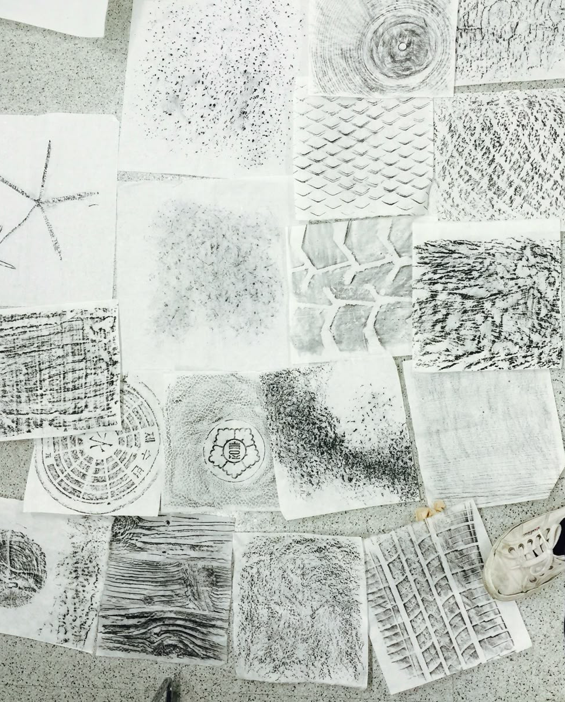
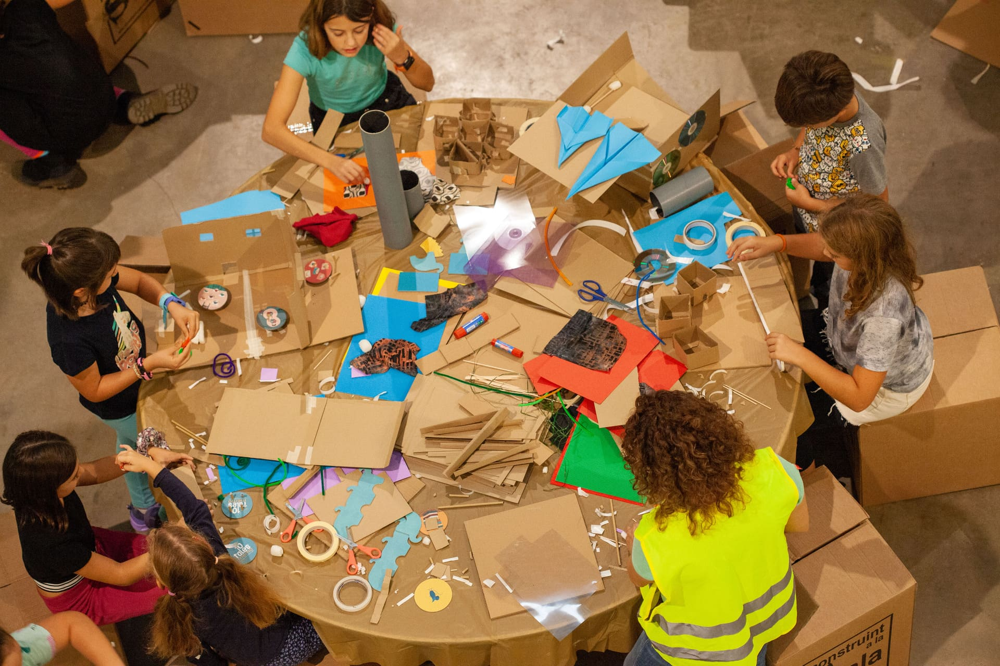

CALAS — Construint a la Sala a les Escoles
Guia de materials per a facilitadors i docents ·
Any de l'Arquitectura, Barcelona 2026 ·
10 escoles · 3 sessions × 45 min · 500+ alumnes
Sessions
Els alumnes mapegen les 10 capes de Barcelona superposant acetats transparents sobre un plànol. Descobreixen com la natura, el comerç, la història i la salut conviuen al mateix espai urbà.
Materials per descarregar

Sortida al barri. Observació de l'element característic assignat. Cerca de 3 textures de capes diferents usant cartes-repte i captura per frotatge.
Materials per descarregar

Prototipatge amb materials reciclats de l'element característic del barri, integrant les observacions de les sessions anteriors. Reflexió sobre sostenibilitat i futur urbà.
Materials per descarregar
Materials físics necessaris
Marc conceptual
Distribució — 10 escoles · 10 barris
Sobre el programa
Associació sense ànim de lucre fundada el 2007 dedicada a apropar l'arquitectura a infants de 7 a 12 anys. Més de 10.000 alumnes participants i 1.500+ arquitectes, pedagogs i artistes voluntaris.
CALAS porta el programa directament a les escoles públiques de Barcelona en el marc de l'Any de l'Arquitectura 2026.
construintalasala.org ↗